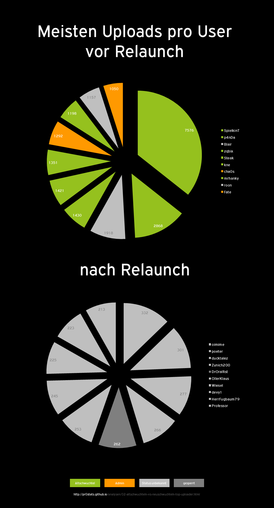

Altschwuchteln vs. Neuschwuchteln - Top Uploader

Annahmen
- Uploads von user "anonymous" waren nicht user-spezifische Uploads (z.B. aus IRC)
- Relaunch war am 03.05.2014 um 14:59 (siehe Tweet zum Relaunch)
Methodik
- siehe Hinweise zur Methodik
SELECT `user`, COUNT(*) AS `count` FROM `stats` WHERE FROM_UNIXTIME(`created`) < '2014-05-03 14:59:00’ AND `user` != 'anonymous’ GROUP BY `user` ORDER BY `count` DESC LIMIT 0,10SELECT `user`, COUNT(*) AS `count` FROM `stats` WHERE FROM_UNIXTIME(`created`) >= '2014-05-03 14:59:00’ AND `user` != 'anonymous’ GROUP BY `user` ORDER BY `count` DESC LIMIT 0,10